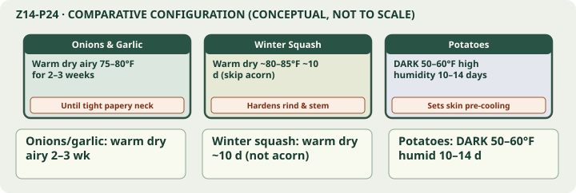

Z14-P24 · Food production and preservation · New manuscript
Cure onions, garlic, winter squash, and potatoes properly before cold storage
Toughen outer skins and heal tiny harvest scuffs so storage crops last months instead of rotting in weeks.
When it applies · Newly harvested onions, garlic, winter squash, pumpkins, and main-crop storage potatoes.
Equipment · Ventilated slatted trays or mesh racks, thermometer/hygrometer, dry shaded airflow, and crop-specific curing table.

Actions
- Cure onions and garlic in a warm, dry, shaded, well-ventilated spot (roughly 75–80°F) for 2 to 3 weeks until necks dry tight and papery skins rustle cleanly before trimming tops and moving to cold-dry storage.[P04, P05]
- Cure winter squash and pumpkins (except acorn squash, which stores best without warm curing) in a warm dry ventilated room (~80–85°F) for roughly 10 days to harden rinds and seal stem cuts before moving to 50–55°F cool-dry storage.[P04, P05]
- Cure storage potatoes in DARK, cool-to-mild, high-humidity air (~50–60°F, ~85–90% RH) for 10 to 14 days so skins set and suberize over minor scuffs BEFORE cooling gradually to 45–50°F dark storage.[P04, P05]
Failure recognition · Throwing freshly dug thin-skinned potatoes and green-necked onions straight into a cold damp cellar without curing, rotting both within three weeks.[P04]
Verify · Confirm crop-specific curing temperature/humidity/darkness completed (tight dry onion necks, hard squash rinds, set potato skins) before long-term binning.[P04, P05]
Stop or change course · Mold growth or damp condensation during curing requires boosting airflow immediately and culling affected items.[P04]
Evidence and editorial notes
- P04 · University of Minnesota Extension · Harvesting and Storing Home Garden Vegetables (current web edition)
- Section: Harvesting Maturity, Curing, and Post-Harvest Handling · Conditions: Home garden root crops, winter squash, onions, potatoes, and greens
Support: Harvest crops at proper maturity during cool morning hours without bruising, cure storage crops (onions, garlic, winter squash, potatoes) at crop-specific warm/dry conditions before cold storage, and cull any nicked or diseased items for immediate use.
Limitations: A single bruised or rotting vegetable spreads decay rapidly across an entire storage bin. · Conflicting evidence: None; explains why curing precedes long cold storage.
Editorial note: Anchors harvest-to-storage quality gates in Z14. · Specialist reviewer: Post-harvest horticulture specialist
Primary source · checked 2026-11-24 - P05 · University of Minnesota Extension · Harvesting and Storing Home Garden Vegetables (current web edition)
- Section: Root-Cellar and Cold-Storage Temperature/Humidity Zones · Conditions: Basements, root cellars, unheated porches, and insulated cold bins
Support: Match stored produce to distinct storage regimes: cold-moist (32–40°F, high humidity for carrots/beets/cabbage), cool-moist (45–50°F for potatoes), cold-dry (32–35°F dry for onions/garlic), and cool-dry (50–55°F dry for winter squash); separate ethylene-producing apples from sensitive vegetables.
Limitations: Storing potatoes below 40°F converts starch to sugar; freezing temperatures ruin unhardened stored roots. · Conflicting evidence: None; prevents treating one basement temperature as universal for all crops.
Editorial note: Core root-cellar zoning and monitoring evidence in Z14. · Specialist reviewer: Post-harvest horticulture and food storage
Primary source · checked 2026-11-24
Source lineage · UMN Extension Harvesting and Storing Vegetables; new manuscript · Classification · New manuscript.